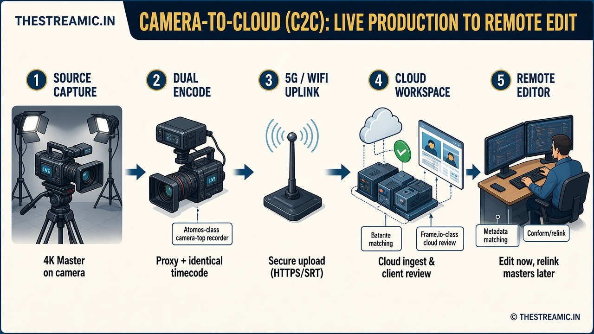

Camera-to-Cloud (C2C): Eliminating the Post-Production Waiting Game
How C2C proxy workflows let editors start cutting footage while production is still underway.

The Technology Explained
Traditional workflows rely on physical media cards: once shooting wraps, data wranglers back up cards to hard drives, which runners transport to the edit suite. Editors cannot start until the drives physically arrive.
Camera-to-Cloud (C2C) removes that bottleneck. As the camera records high-resolution master files locally, a connected cloud transmitter encodes a lightweight proxy copy of the clip. The moment a scene is cut, the proxy uploads over 5G or Wi-Fi to a cloud workspace, so editors anywhere can start cutting while production is still underway.
Technical Deep-Dive & Mechanics
C2C relies on timecode synchronization and identical metadata pairing across the master and proxy files:
- Dual encoding: the camera or external recorder writes uncompressed 4K masters locally while concurrently streaming compressed H.264/H.265 proxies.
- Metadata matching: the proxy mirrors the master's file name, frame rate, audio structure, and timecode.
- Cloud ingestion: proxies stream to platforms like Frame.io over secure transport (HTTPS/SRT).
- Conforming & relinking: the remote editor cuts using proxies, then the NLE relinks the finished project to the high-resolution masters for final export.
That ingest model is part of the wider shift toward cloud and remote production workflows.
Benefits for Production Teams & Businesses
- Editors work in real time from anywhere, cutting travel latency to zero.
- Directors and clients review takes on mobile devices seconds after recording.
- Removes the risk of lost or damaged hard drives in transit.
Top Real-World Solutions
- Frame.io (Adobe): the dominant cloud ecosystem for proxy ingestion, client review, and native NLE integration.
- Atomos Ninja TX: a camera-top monitor/recorder that encodes and transmits proxies to Frame.io over Wi-Fi 6 or 5G.
- Accsoon CineView Master 4K: a budget-friendly wireless transmission system pairing 4K monitoring with cloud connectivity.